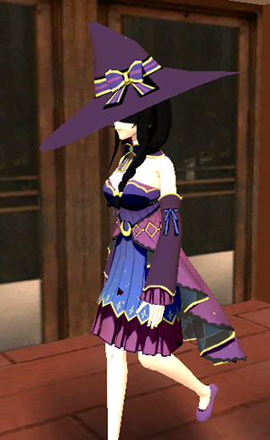

Personajes Principales

Coffe TV
Coffe TV es un youtuber y streamer que habla principalmente de películas y series.
Vivió toda su vida en Coffe Town, San Fariseas, en una casa sobre Calle Comunidad, y allí formó poco a poco su
propia comunidad, acompañado principalmente de Baicito, Rita, La Tana y El Nes Junior.
Coffe estaba muy conforme con su comunidad y con su vida en Coffe Town, pero poco a poco
empezaron a haber problemas en la ciudad y con su comunidad. Su archi enemigo Coscu había empezado a formar
alianzas con la policía, especialmente con el Duende Verde y con Scooby Doo, y se las ingenió para sabotear los
streams de Coffe y de la comunidad, destruyéndolos poco a poco. A Coffe esto le afectó mucho, dado que él no
quería tener conflictos con nadie, pero Coscu parecía empecinado en verlo caer a toda costa. Baicito fue quien
más le insistió a Coffe en que debían contraatacar de alguna manera, pero Coffe no quería saber nada al respecto,
no quería desatar ningún tipo de guerra. Finalmente, luego de un tiempo de encontrarse en esta situación, Coffe
decidió dejar Coffe Town repentinamente, abandonando a sus amigos y su comunidad, y se mudó a Enano City.
Coffe vivió en Enano City durante dos años aproximadamente. Su contacto con la comunidad
fue muy escaso, casi nulo. Durante su ausencia, la comunidad de Coffe se fue deteriorando hasta convertirse en
apenas una sombra de lo que alguna vez fue. Varios grupos de la comunidad se separaron de ella, por ejemplo los
LATAM y los mexicanos, que formaron sus propias bandas y comenzaron a tener enfrentamientos con la banda de la
comu. Muchos se alejaron por miedo a sufrir represalias por parte se la banda de los Ingleses-Brazucas, la cual
se había formado hacía poco en la ciudad y eran tremendamente agresivos. Otros, por otra parte, cayeron en la
droga de las tortafritas, un negocio que dominaban los Ingleses con la ayuda de Coscu y la policía, y contra el
cual la comunidad de Coffe no podía luchar.
Coffe decidió volver a Coffe Town cuando recibió un llamado de Baicito comunicándole que
Candelixx, una de las integrantes de la comu más querida por Coffe, había sido asesinada. Cuando volvió, Baicito
lo confrontó, muy enojado, y le recriminó todo ese tiempo que Coffe los había abandonado, mencionando que otros
miembros de la comu también habían sido asesinados, como Jalappa, García Ferré y Mel Mermelada. La Tana Lamorte
también se muestra enojada con Coffe por haberlos abandonado, aunque no tanto como Baicito. Por otro lado, Coscu
también confrontó al youtuber apenas llegó a la ciudad, exigiéndole que no vuelva a prender stream, amenazándolo
con sacar a la luz unos clips fuera de contexto se significarían una cancelación a Coffe.
Con este escenario desesperanzador, Coffe deberá probar a sus amigos y su comunidad que
a no los quiere abandonar, y deberá enmendar el daño que han sufrido a lo largo de los dos años en los que estuvo
ausente.
Su voz la hace el mismo Coffe TV de la vida real.
Al inicio del juego, Coffe lleva el mismo corte de pelo que tiene en la vida real, además
de un bigote grande igual al bigote que usa en sus transmisiones de Twitch, utilizando un filtro de cámara.
Al ser el personaje principal, Coffe puede cambiar su estilo de pelo,
cortándose el pelo en la peluquería. Los cortes de pelo disponibles son
diferentes colores de su corte de pelo en la vida real y también cortes de pelo de otros personajes de la comunidad,
como La Tiendita Viajera o Voglinn, entre otros, cada uno con variantes de colores. Sin embargo, sea el corte de
pelo que sea, siempre tendrá su bigote característico.
La vestimenta que lleva al inicio del juego es la misma vestimenta que lleva CJ en el
GTA San Andreas original: una musculosa blanca, unos jeans azules y unas zapatillas negras.
Al igual que con su corte de pelo, puede cambiar su vestimenta, comprando ropa en los
diferentes locales que
hay en la ciudad. Hay una variedad de ropa que puede comprar. Lo más destacado son sus características remeras
rayadas con las que siempre se lo ve en sus videos de YouTube, muchas prendas temáticas de chistes del canal de Twitch
y algunos diseños creados por Voglinn, como sus característicos pantalones acampanados.
Baicito
Baicito, también conocido como "el toro", es uno de los amigos más cercanos de
Coffe TV. Vive al lado de la casa de Coffe, trabaja en una ferretería, es de Boca y está en pareja con
Artisteando hace varios años.
Baicito es el personaje que más insiste en confrontar a la banda de los
Ingleses-Brazucas. Le preocupa mucho los asesinatos que la banda estuvo cometiendo y también la distribución
de tortafritas que ha arruinado a tantas personas, muchas de ellas integrantes de su comunidad. Es por eso
que está constantemente planificando y organizando ataques hacia la banda de los Ingleses, especiamente después
de que Coffe volviera a la ciudad.
Baicito también es cantante de freestyle y rap. Una vez, hace unos años, le ganó a
Wos en una batalla de freestyle en una plaza, como menciona John Frustrante en la misión "John Ahogante".
Además, su canción "Cómo no" suena en la radio Coffebeats.
Aparece en muchas misiones, pero no se lo puede encontrar en la calle.
Su voz la hace el mismo Baicito de la vida real.
Baicito viste una remera negra de Slasher, unas bermujas de jean azules y unas zapatillas
negras.

El Nes Junior
El Nes Junior es un personaje que destaca por su alegría y vivacidad con
la que cuenta todo el tiempo. Tiene una muy buena relación con Coffe, Baicito y la Tana, ya que vivió
mucho tiempo en Calle Comunidad, en el mismo barrio que ellos, pero luego de que Coffe se fuera de la
ciudad, se mudó a otro barrio. Es hincha de San Lorenzo, trabaja en un kiosco vendiendo panchos y es
fanático de las películas de terror.
Cuando Coffe vuelve a la ciudad, el Nes le pide varios favores al youtuber,
que lo lleve o acompañe a variados lugares, aunque en algunas ocasiones, estos favores parecen un tanto
extraños y con poco sentido.
El Nes tiene un negocio de ventas de panchos llamado "Panchos Junines". Hay carteles
en las calles publicitando este negocio, y también se lo puede ver al Nes vendiendo panchos en algunos puestos
a lo largo de Coffe Town.
Aparece en varias misiones, pero su versión normal no aparece en la calle. Quienes
sí se pueden encontrar en la calle son sus versiones alternas: el Nes Thanos y el Nes Prostituta.
Su voz la hace el mismo Nes Junior de la vida real.
El Nes se viste con una remera amarilla de Chucky, unos jeans gris oscuro y unas
zapatillas negras.
La Tana Lamorte
La Tana Lamorte es otra de las amigas más cercanas de Coffe TV, siendo también una
de las moderadoras de su canal, junto a Rita Alejandra. Vive al lado de la casa de Coffe, siendo una de sus
amigas de la infancia. Es hincha de Independiente, es vegetariana y amante de las películas antiguas en blanco
y negro.
Luego de la vuelta de Coffe, la Tana se ocupó principalmente de conseguir armas para
la banda de la comu, robándolas de diferentes lugares de los que sabe ella o le dice Coscu.
La Tana aparece en algunas misiones, pero no en la calle. Hay una versión alterna suya
llamada Dark Tana.
Su voz la hace la Tana Lamorte de la vida real.
La Tana se viste con una camiseta roja de Independiente, unos jeans ajustados negros
y unas zapatillas negras.
Rita Alejandra
Rita es otra de las amigas más cercana de Coffe TV, siendo también la
moderadora de su canal de Twitch junto a la Tana. Ella también vivió con los demás en el barrio,
aunque al ser la más joven de todos, no se juntaba tanto con ellos, y actualmente ya no vive en
Calle Comunidad. Es hincha de River, está siempre remarcando lo que hacen los "varones" y tiene
un carácter muy fuerte.
Para disgusto de su amigo Baicito, Rita está de novia con Edduerdo,
miembro importante de la banda de los mexicanos. Sin embargo, ella está muy al margen de toda
la guerra entre las bandas del barrio, por lo que no le importa estar saliendo con alguien de
una banda enemiga.
Para ganarse la vida, Rita tiene un local de ropa en el barrio Lindsay Cojan,
llamado DesideRita, el cual presenta toda una decoración relacionada a River Plate.
Rita aparece en unas pocas misiones, pero también se la puede encontrar en la calle.
Hay una versión alterna suya llamada Storm Rita.
Su voz la hace la misma Rita Alejandra de la vida real.
Rita se viste con una camiseta de River Plate, unos jeans azules y zapatillas negras.
Coscu
El archienemigo de Coffe TV, también youtuber y streamer, Coscu es el
antagonista principal de esta historia.
Desde el inicio en el mundo de internet de ambos, Coscu y Coffe estuvieron
constantemente compitiendo por quién es el mejor streamer. Coffe siempre lo acusaba a Coscu de que
le robaba ideas, y Coscu siempre lo trató de "zurdito" y siempre intentó sabotear los streams de
Coffe y cualquier proyecto que éste quería llevar a cabo.
Coffe nunca había considerado a Coscu como una verdadera amenaza, hasta
que este último comenzó a tener lazos estrechos con la policía, a través de su alianza con el Duende
Verde y Scooby Doo. Desde ese entonces, sus planes para destruir a la comunidad de Coffe comenzaron
a tener éxito, resultando en la subsiguiente división de bandas e incluso en la muerte de varios de
los miembros de la comu. Además, junto a la banda de Ingleses-Brazucas, Coscu se metió en el negocio
del tráfico de tortafritas, lo cual supuso otro punto de conflicto entre él y la banda de la comu.
Coscu sólo aparece en algunas misiones, no aparece en la calle.
Su voz está hecha con inteligencia artificial, con el método de "Texto
a Voz".
Coscu se viste con un buzo de la marca Drew de color blanco y celeste, unos
pantalones beige y zapatillas Nike celestes, blancas y negras. También tiene unos aritos con las insignias
"CA", por la "Coscu Army". Esta es la ropa que viste en la foto que tiene con Lionel Messi.
Personajes Secundarios
John Frustrante
John Frustrante es amigo y vecino de Coffe TV y los demás en Calle Comunidad.
Vive a dos casas de lo de Baicito. Es músico y cantante, y tiene un canal de YouTube en donde sube
música reversionada de artistas famosos como Taylor Swift y Harry Styles, cosa que lo llevó a caer
preso luego de la partida de Coffe de Coffe Town. Una característica destacada de él es que es muy petiso.
Luego de salir de la cárcel bajo un régimen condicional, John Frustrante le
pide a Coffe que lo ayude a lanzarse en su carrera como artista de freestyle, algo en lo que el chico
evidentemente es muy poco talentoso.
John aparece en algunas misiones del juego, pero no aparece en la calle.
Algunos de sus temas suenan de fondo en algunas cinemáticas, y se lo menciona en la publicidad radial
de "Mi familia es un enano".
Su voz la hace el mismo John Frustrante de la vida real.
John se viste sólo con un chaleco de cuero marrón, unos jeans negros y zapatillas negras.
Edduerdo
Edduerdo es un personaje de nacionalidad Mexicana, uno de los músicos
más reconocidos de la comunidad. Es el líder de la banda de los mexicanos, y actualmente es el novio
de Rita.
Se pueden escuchar varias canciones de Edduerdo en la radio CoffeBeats. Aparece
en algunas misiones y también está en la calle. Hay publicidades gráficas en la calle del perfume
"Edduerdo Banderas, Blue Seduction" con su cara.
Su voz la hace el mismo Edduerdo de la vida real.
Edduerdo se viste con una campera de jean azul y remera negra, jeans gris oscuro
, zapatillas rojas y blancas y lentes de sol negros y rojos.
El Duende Verde
El aliado más fiel a Coscu, El Duende Verde es un policía corrupto de Coffe Town.
Tiene una actitud burlona y cínica.
Aparece en algunas misiones, pero no se lo puede ver en la ciudad. También
aparece en algunas publicidades gráficas de la marca de ropa Jouki Time.
La voz del Duende Verde la hace Coffe TV.
El Duende Verde se viste con su uniforme de policía, y lleva su casco verde y
su armadura verde en los brazos.
Scooby Doo
Scooby Doo es el tercer miembro de la banda de Coscu que también pertenece
a la policía, al igual que el Duende Verde. De los tres, es el que menos poder tiene, y de hecho no
habla nuna en las cinemáticas, sólo le escuchamos la voz en una llamada al principio del juego.
Aparece en algunas misiones, pero no se lo puede ver en la ciudad. Algunas de las
publicidades gráficas de la marca de ropa Jouki Time llevan su cara.
La voz de Scooby Doo la hace Coffe TV.
Scooby Doo se viste con su uniforme de policía.

La Jabru
La Jabru es un personaje que aparece casi al final de las misiones. Es la novia de Coffe TV
en el juego y también en la vida real. Coffe TV siempre le dijo "La Jabru" para no decir su verdadero nombre, y de ahí
que su apariencia es también de una bruja y que no se le ve la cara.
Aparece en una sola misión casi a lo último, aunque más adelante en la historia pasa a
tener más protagonismo. También se la ve por la calle, y hay una estación de radio llamada JabruMix, con una selección
de temas de hip hop y rap que la misma Jabru hizo para el juego.
La voz de la Jabru la hace ella misma en la vida real.
La Jabru se viste con un atuendo de bruja de color violeta y blanco, con un gran sombrero
puntiagudo que le tapa los ojos completamente.
Bandas
Banda Comunidad
La Banda Comunidad es la banda que se reúne con Coffe TV y los demás personajes
principales para algunas misiones. Se reúnen en los barrios dominados por la comunidad de Coffe y saltan a
defender a Coffe cuando él es atacado. Ademásl, Coffe también puede reclutarlos para que lo acompañen y ayuden,
siempre que tenga el respeto necesario.
Esta Banda está compuesta por Meli Yecca, Dogi The Dog y Shaggy. Además, en algunas
cinemáticas también aparecen Florcita Barren y Caio Gasolero como miembros de la banda.
Meli Yecca
Dogi The Dog

Shaggy
Banda Ingleses Brazucas
La banda de los Ingleses Brazucas es la banda enemiga de la banda Comunidad. Está compuesta
por hinchas de futbol ingleses y brasileros. Son la banda más reciente de Coffe Town, quienes apenas llegaron recibieron
apoyo de Coscu y de la policía, y, además de dedicarse al negocio del tráfico ilegal de tortafritas, también
hacen favores para la policía y Coscu.
Esta Banda está compuesta por dos hinchas de Inglaterra y un hincha de Brasil. Además,
en una misión, aparece un personaje hincha de Brasil llamado Ronaldinho, que no es el jugador de futbol, solo tiene el
mismo nombre.
Hincha Inglaterra 1
Hincha Inglaterra 2
Hincha Brasil
Banda LATAM
La banda LATAM es una banda de gente de la comunidad que se separó de la misma luego de
la partida de Coffe. Está conformada por integrantes de la comu de distintas nacionalidades de latinoamérica. Son
agresivos contra Coffe y también están en guerra con las demás bandas.
Esta Banda está compuesta por Roma Vargas, Kramer y Butterfly Meh.
Roma Vargas
Kramer
Butterfly Meh
Banda Mexicanos
La banda de los Mexicanos, al igual que la de los LATAM, inicialmente formaron parte
de la comunidad Coffe, pero se separaron de ellos luego de la partida del streamer. Son agresivos contra Coffe
y las otras bandas, y pueden entrar en guerra por la conquista de algún territorio.
Esta Banda está compuesta por Caro Dulce, Silgonz y Vuelo de Tortuga. Además,
Edduerdo también formaría parte de esta banda, siendo el líder de la misma. También aparece Kemonito como
uno de sus miembros, pero sólo durante una cinemática en la misión "Edduerdo".
Caro Dulce
Silgonz
Vuelo de Tortuga